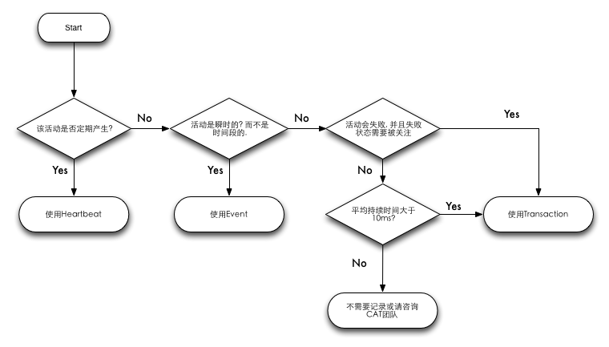
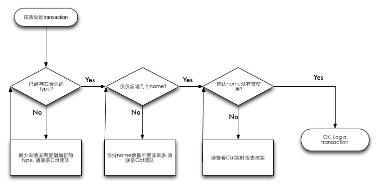
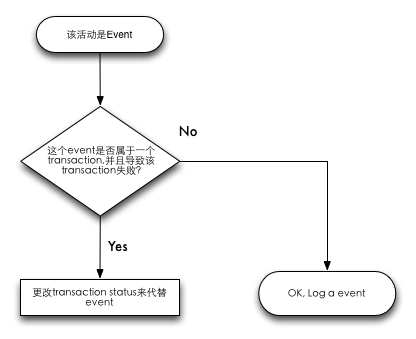
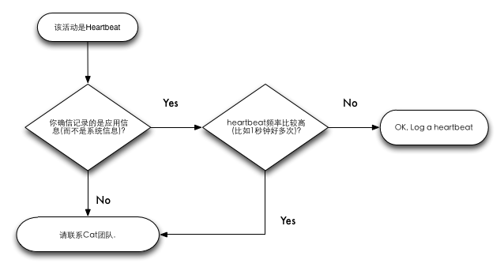

本文描述了CAT的概要结构, 以及如何使用cat分析应用程序的方法和最佳实践. 这篇文档是第1版, 我们会尽快增加更丰富的内容. 如果你有任何问题, 请联系CAT团队成员.
TODO
TODO
CAT客户端可以向服务端发送Transaction, Event, Heartbeat三种消息. 消息的传输格式如下:
<Class><Timestamp>\t<Type>\t<Name>[\t<Status][\t<Duration>][\t<Data>]
某些运行期单元要花费一定时间完成工作, 内部需要其他处理逻辑协助, 我们定义为Transaction. Transaction可以嵌套(如http请求过程中嵌套了sql处理). 大部分的Transaction可能会失败, 因此需要一个结果状态码. 如果Transaction开始和结束之间没有其他消息产生, 那它就是Atomic Transaction(合并了起始标记).
Heartbeta表示程序内定期产生的统计信息, 如CPU%, MEM%, 连接池状态, 系统负载等.
Event表示所有其他不能归属到Transaction或者Heartbeat的消息. 包括警告, 错误, 业务提示信息, 以及CAT自身的内部信息.
记录消息产生的时刻, 格式"yyyy-mm-dd HH:MM:SS.sss".
大小写敏感的字符串. 常见的Transaction type有 "URL", "SQL", "Email", "Exec"等. 常见的Event type有 "Info", "Warn", "Error", 还有"Cat"用来表示Cat内部的消息.
大小写敏感的字符串. type和name的组合要满足全局唯一性. 常见的URL transaction type的name如 "ViewItem", "MakeBid", "SignIn"等. SQL transaction type的name如 "AddFeedback", "GetAccountDetailUnit4", "IncrementFeedbackAndTotalScore"等.
大小写敏感的字符串. 0表示成功, 非零表示失败. 建议不要使用太长的字符串. Transaction start没有status字段.
精确到0.1毫秒. 表示transaction start和transaction end之间的时间长度. 仅出现在Transaction end或者Atomic Transaction. Event和Heartbeat没有duration字段.
以&字符分割的name=value对组成的字符串列表. Transaction start没有data字段.
我们建议程序内部跨越边界访问的活动都需要记录下Cat消息. 另外, 三种基本消息Transaction, Event, Heartbeat何时使用, 请参见下图:

当你准备要使用Transaction时,请遵循下图的流程:

当你准备要使用event时,请遵循下图的流程:

当你准备要使用heartbeat时,请遵循下图的流程:
